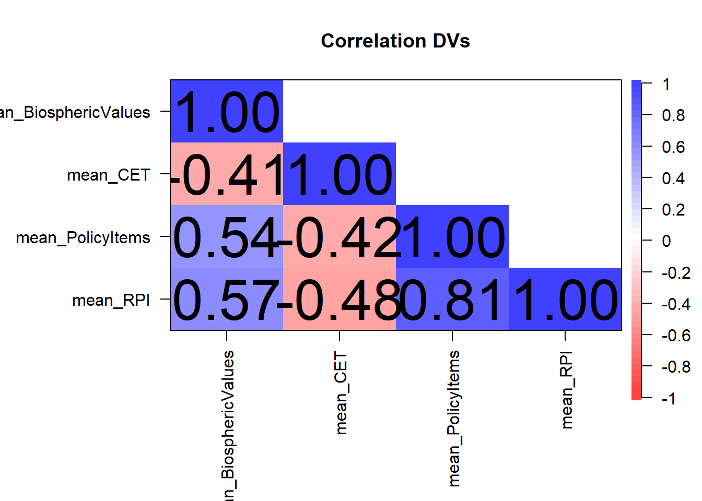
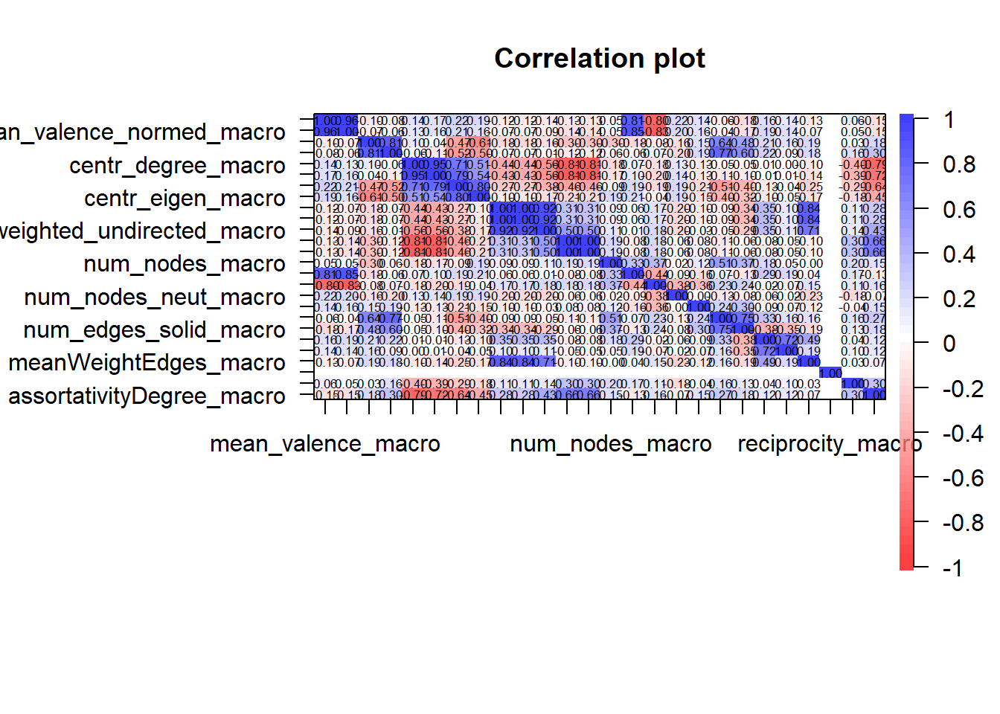
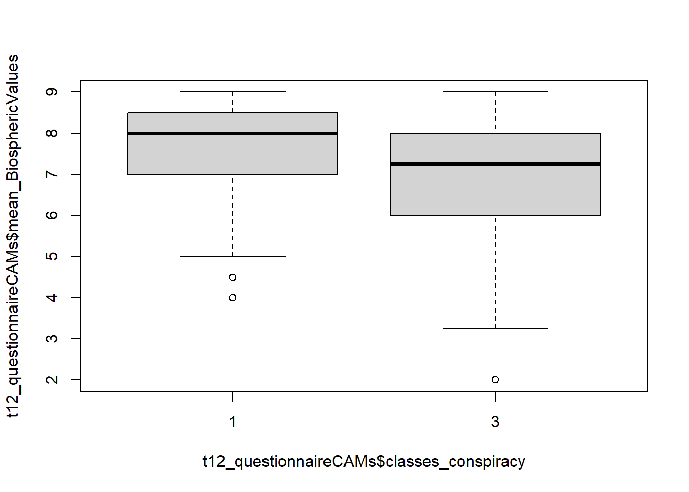
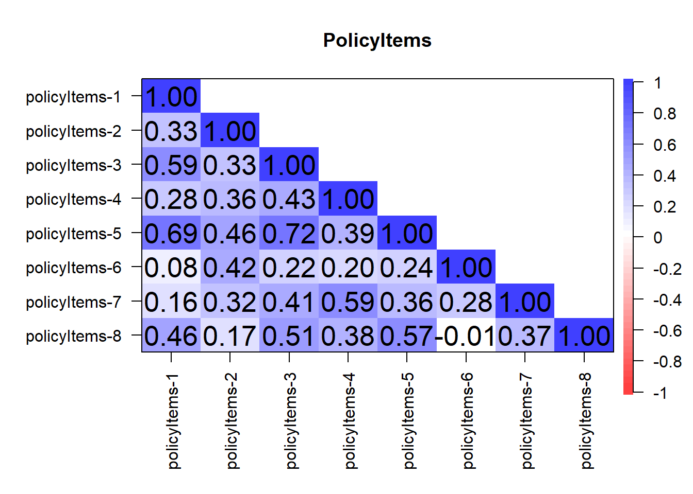
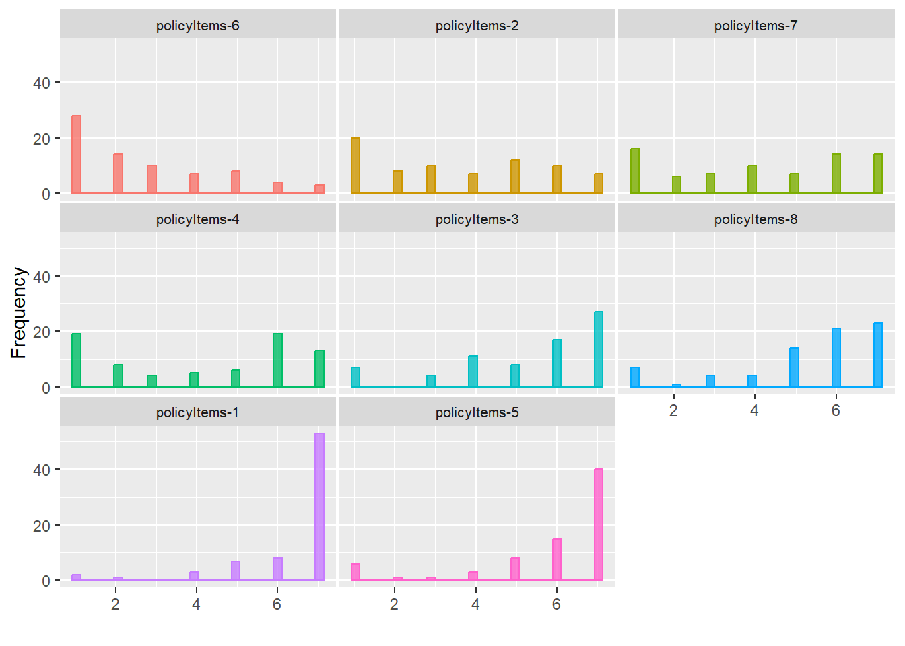
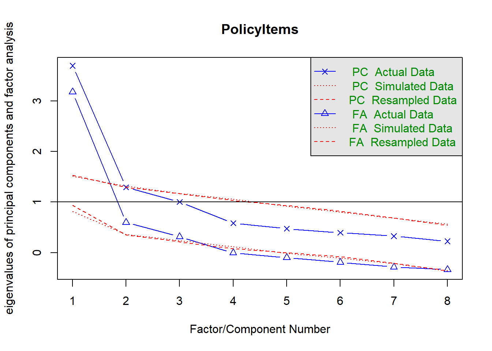
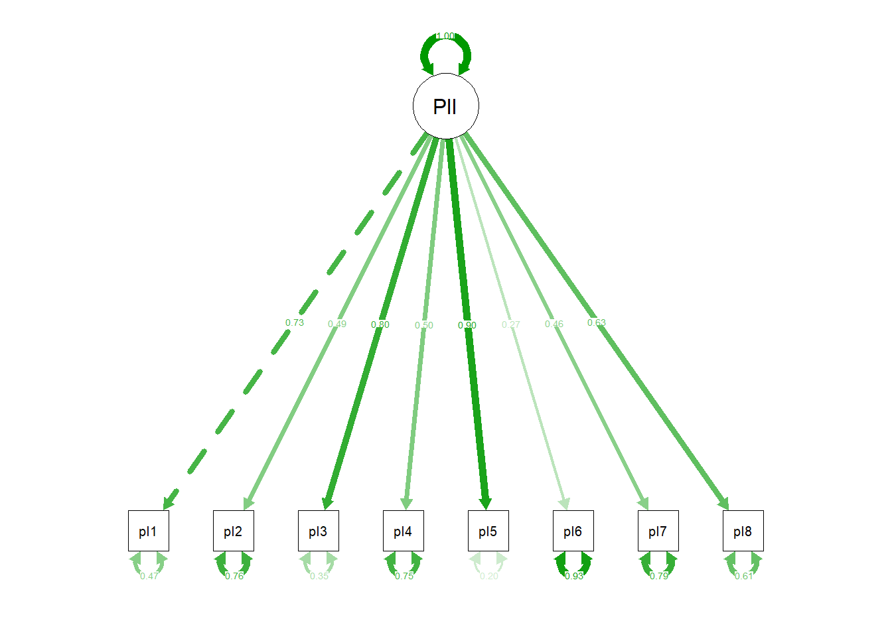

## global variables: Analyzes for Bachelor Theses
Notes
global variables
load merged pre-processed data
# sets the directory of location of this script as the current directory
# setwd(dirname(rstudioapi::getSourceEditorContext()$path))
# load packages
require(pacman)
# regsem not needed!
p_load('tidyverse', 'jsonlite', 'magrittr', 'xlsx',
'stargazer', 'psych', 'jtools', 'DT', 'ggstatsplot',
'lavaan', 'igraph',
'regsem', 'MplusAutomation',
'MASS', 'report')
# Rcmdr
# load data
setwd("outputs")
t12_questionnaireCAMs <- readRDS(file = "t12_questionnaireCAMs.rds")
CAMfiles <- readRDS(file = "CAMfiles.rds")
CAMdrawn <- readRDS(file = "CAMdrawn.rds")
t12_questionnaireCAMs$total_min_prolific[t12_questionnaireCAMs$total_min_prolific > 1000] <- NA
# load functions
setwd("../../functions")
for(i in 1:length(dir())){
# print(dir()[i])
source(dir()[i], encoding = "utf-8")
}
setwd("../functions_CAMapp")
for(i in 1:length(dir())){
# print(dir()[i])
source(dir()[i], encoding = "utf-8")
}
rm(i)Laras BA
table(t12_questionnaireCAMs$country.y)
Germany USA
74 47 compute mean variables for multi-dimensional solutions
### eine Skala:
"mean_BiosphericValues" [1] "mean_BiosphericValues""mean_CET" [1] "mean_CET""mean_PolicyItems"[1] "mean_PolicyItems"### eine Skala:
t12_questionnaireCAMs$concernClimate1 [1] NA NA NA NA NA 7 NA NA NA NA NA NA NA NA NA NA NA NA NA 3 NA NA NA 7 NA
[26] 7 NA 6 NA NA NA NA NA NA NA 6 NA NA NA NA NA NA 7 NA 6 NA NA NA 7 NA
[51] NA NA NA NA NA 7 NA NA NA NA NA NA NA NA NA NA NA NA NA NA NA NA NA NA NA
[76] NA NA NA NA NA NA NA NA NA NA NA NA NA NA NA NA NA NA NA NA NA NA 5 NA NA
[101] NA NA NA 5 NA NA NA 7 NA NA NA NA NA NA NA NA NA NA 6 6 NA NA NA NA NA
[126] NA 7 NA NA NA NA NA NA NA NA NA NA 7 NA NA NA NA NA NA NA 7 NA NA NA NA
[151] NA NA NA NA NA NA NA NA NA NA NA NA 5 4 2 NA NA 2 7 6 NA NA NA NA NA
[176] NA NA 2 NA NA NA 2 7 NA NA NA NA NA NA NA NA 6 NA NA NA NA NA NA NA 5
[201] NA NA NA NA NA NA NA NA NA 4 NA NA NA NA NA NA NA 5 NA NA NA NA NA NA 1
[226] NA NA NA NA NA NA NA 3 NA NA NA 2 1 NA 6 NA 1 5 NA NA NA 1 3 1 NA
[251] NA NA NA NA 2 NA 4 NA NA NA NA NA NA NA NA NA NA 3 NA NA NA NA NA NA NA
[276] 5 NA NA NA NA NA NA NA NA NA NA NA NA NA NA NA NA NA NA NA 1 5 NA NA NA
[301] NA NA NA NA NA NA NA NA 5 6 7 NA NA NA NA NA NA NA NA NA NA NA NA NA NA
[326] NA NA NA NA NA NA NA NA NA NA NA NA 7 NA NA NA 2 5 6 NA 7 NA NA 2 5
[351] NA NA NA NA NA 7 NA NA NA NA 5 NA 7 NA NA 2 NA 5 NA NA NA NA NA NA NA
[376] NA 6 NA NA NA NA NA 6 7 NA NA NA NA NA 2 5 NA NA NA NA 7 NA 2 7 NA
[401] NA 6 5 1 NA NA 3 NA 6 NA NA NA 7 NA NA NA 6 NA NA NA NA NA NA NA 7
[426] NA NA 6 5 NA NA NA NA 7 NA NA NA NA NA NA NA 6 NA 5 6 7 6 NA 7 NA
[451] 2 NA NA NA 7 6 NA NA 6 NA NA NA 7 NA 6 5 NA NA 7 NA NA NA NA NA NA
[476] NA NA NA NA 5 3 NA 6 NA 7 NA NA NA NA NA 5 NA NA NA NA NA NA 6 NA NA
[501] NA 4 5 7 NA 6 7 NA NA 6 NA NA 2 NA NA NA 7 NA 4 NA 5 NA NA 7 NA
[526] NA NA NA NA NA NA NA NA NA NA NA NA NA NA 7 NA NA NA NA NA NA NA 6 NA NA
[551] NA NA NA NA NA 7 NA NA NA NA NA NA NA NA NA NA NA 5 NA NA NA 1 7 NA NA
[576] 1 4 NA NA NA NA NA NA NA NA NA NA NA NA NA 7 NA NA NA NA NA NA NAt12_questionnaireCAMs$concernClimate2 [1] NA NA NA NA NA 5 NA NA NA NA NA NA NA NA NA NA NA NA NA 2 NA NA NA 6 NA
[26] 7 NA 5 NA NA NA NA NA NA NA 5 NA NA NA NA NA NA 7 NA 4 NA NA NA 7 NA
[51] NA NA NA NA NA 5 NA NA NA NA NA NA NA NA NA NA NA NA NA NA NA NA NA NA NA
[76] NA NA NA NA NA NA NA NA NA NA NA NA NA NA NA NA NA NA NA NA NA NA 6 NA NA
[101] NA NA NA 3 NA NA NA 7 NA NA NA NA NA NA NA NA NA NA 5 5 NA NA NA NA NA
[126] NA 6 NA NA NA NA NA NA NA NA NA NA 7 NA NA NA NA NA NA NA 6 NA NA NA NA
[151] NA NA NA NA NA NA NA NA NA NA NA NA 4 4 2 NA NA 2 7 5 NA NA NA NA NA
[176] NA NA 2 NA NA NA 2 7 NA NA NA NA NA NA NA NA 5 NA NA NA NA NA NA NA 3
[201] NA NA NA NA NA NA NA NA NA 1 NA NA NA NA NA NA NA 5 NA NA NA NA NA NA 1
[226] NA NA NA NA NA NA NA 4 NA NA NA 2 1 NA 6 NA 1 4 NA NA NA 1 1 1 NA
[251] NA NA NA NA 4 NA 4 NA NA NA NA NA NA NA NA NA NA 2 NA NA NA NA NA NA NA
[276] 5 NA NA NA NA NA NA NA NA NA NA NA NA NA NA NA NA NA NA NA 1 3 NA NA NA
[301] NA NA NA NA NA NA NA NA 4 4 7 NA NA NA NA NA NA NA NA NA NA NA NA NA NA
[326] NA NA NA NA NA NA NA NA NA NA NA NA 7 NA NA NA 1 4 5 NA 6 NA NA 4 5
[351] NA NA NA NA NA 5 NA NA NA NA 4 NA 5 NA NA 1 NA 4 NA NA NA NA NA NA NA
[376] NA 4 NA NA NA NA NA 5 6 NA NA NA NA NA 2 5 NA NA NA NA 7 NA 1 6 NA
[401] NA 6 5 1 NA NA 3 NA 5 NA NA NA 7 NA NA NA 6 NA NA NA NA NA NA NA 7
[426] NA NA 5 4 NA NA NA NA 7 NA NA NA NA NA NA NA 5 NA 5 5 7 5 NA 7 NA
[451] 5 NA NA NA 6 6 NA NA 6 NA NA NA 6 NA 5 5 NA NA 7 NA NA NA NA NA NA
[476] NA NA NA NA 5 5 NA 5 NA 5 NA NA NA NA NA 3 NA NA NA NA NA NA 4 NA NA
[501] NA 4 5 6 NA 5 6 NA NA 5 NA NA 4 NA NA NA 6 NA 5 NA 4 NA NA 5 NA
[526] NA NA NA NA NA NA NA NA NA NA NA NA NA NA 5 NA NA NA NA NA NA NA 6 NA NA
[551] NA NA NA NA NA 7 NA NA NA NA NA NA NA NA NA NA NA 1 NA NA NA 5 6 NA NA
[576] 1 4 NA NA NA NA NA NA NA NA NA NA NA NA NA 3 NA NA NA NA NA NA NAt12_questionnaireCAMs$probabilityClimate1 [1] NA NA NA NA NA 5 NA NA NA NA NA NA NA NA NA NA NA NA NA 3 NA NA NA 7 NA
[26] 6 NA 5 NA NA NA NA NA NA NA 5 NA NA NA NA NA NA 5 NA 2 NA NA NA 7 NA
[51] NA NA NA NA NA 3 NA NA NA NA NA NA NA NA NA NA NA NA NA NA NA NA NA NA NA
[76] NA NA NA NA NA NA NA NA NA NA NA NA NA NA NA NA NA NA NA NA NA NA 5 NA NA
[101] NA NA NA 7 NA NA NA 6 NA NA NA NA NA NA NA NA NA NA 6 7 NA NA NA NA NA
[126] NA 5 NA NA NA NA NA NA NA NA NA NA 7 NA NA NA NA NA NA NA 7 NA NA NA NA
[151] NA NA NA NA NA NA NA NA NA NA NA NA 4 4 3 NA NA 3 7 6 NA NA NA NA NA
[176] NA NA 3 NA NA NA 1 6 NA NA NA NA NA NA NA NA 5 NA NA NA NA NA NA NA 1
[201] NA NA NA NA NA NA NA NA NA 4 NA NA NA NA NA NA NA 2 NA NA NA NA NA NA 1
[226] NA NA NA NA NA NA NA 1 NA NA NA 2 1 NA 2 NA 4 5 NA NA NA 1 1 2 NA
[251] NA NA NA NA 7 NA 4 NA NA NA NA NA NA NA NA NA NA 3 NA NA NA NA NA NA NA
[276] 4 NA NA NA NA NA NA NA NA NA NA NA NA NA NA NA NA NA NA NA 1 3 NA NA NA
[301] NA NA NA NA NA NA NA NA 3 6 7 NA NA NA NA NA NA NA NA NA NA NA NA NA NA
[326] NA NA NA NA NA NA NA NA NA NA NA NA 6 NA NA NA 2 4 4 NA 6 NA NA 1 4
[351] NA NA NA NA NA 6 NA NA NA NA 4 NA 7 NA NA 3 NA 4 NA NA NA NA NA NA NA
[376] NA 4 NA NA NA NA NA 6 6 NA NA NA NA NA 2 6 NA NA NA NA 7 NA 1 7 NA
[401] NA 6 7 1 NA NA 5 NA 5 NA NA NA 6 NA NA NA 6 NA NA NA NA NA NA NA 7
[426] NA NA 4 3 NA NA NA NA 6 NA NA NA NA NA NA NA 7 NA 4 7 5 6 NA 6 NA
[451] 2 NA NA NA 4 5 NA NA 3 NA NA NA 7 NA 4 5 NA NA 5 NA NA NA NA NA NA
[476] NA NA NA NA 6 3 NA 5 NA 7 NA NA NA NA NA 4 NA NA NA NA NA NA 6 NA NA
[501] NA 5 5 6 NA 6 7 NA NA 3 NA NA 3 NA NA NA 7 NA 5 NA 5 NA NA 5 NA
[526] NA NA NA NA NA NA NA NA NA NA NA NA NA NA 7 NA NA NA NA NA NA NA 6 NA NA
[551] NA NA NA NA NA 7 NA NA NA NA NA NA NA NA NA NA NA 4 NA NA NA 1 7 NA NA
[576] 1 3 NA NA NA NA NA NA NA NA NA NA NA NA NA 6 NA NA NA NA NA NA NAt12_questionnaireCAMs$probabilityClimate2 [1] NA NA NA NA NA 7 NA NA NA NA NA NA NA NA NA NA NA NA NA 3 NA NA NA 7 NA
[26] 7 NA 7 NA NA NA NA NA NA NA 5 NA NA NA NA NA NA 6 NA 5 NA NA NA 7 NA
[51] NA NA NA NA NA 7 NA NA NA NA NA NA NA NA NA NA NA NA NA NA NA NA NA NA NA
[76] NA NA NA NA NA NA NA NA NA NA NA NA NA NA NA NA NA NA NA NA NA NA 6 NA NA
[101] NA NA NA 7 NA NA NA 7 NA NA NA NA NA NA NA NA NA NA 6 7 NA NA NA NA NA
[126] NA 7 NA NA NA NA NA NA NA NA NA NA 7 NA NA NA NA NA NA NA 7 NA NA NA NA
[151] NA NA NA NA NA NA NA NA NA NA NA NA 5 5 6 NA NA 4 7 5 NA NA NA NA NA
[176] NA NA 3 NA NA NA 2 7 NA NA NA NA NA NA NA NA 6 NA NA NA NA NA NA NA 5
[201] NA NA NA NA NA NA NA NA NA 4 NA NA NA NA NA NA NA 4 NA NA NA NA NA NA 1
[226] NA NA NA NA NA NA NA 1 NA NA NA 2 4 NA 6 NA 1 6 NA NA NA 2 4 3 NA
[251] NA NA NA NA 6 NA 4 NA NA NA NA NA NA NA NA NA NA 3 NA NA NA NA NA NA NA
[276] 5 NA NA NA NA NA NA NA NA NA NA NA NA NA NA NA NA NA NA NA 2 6 NA NA NA
[301] NA NA NA NA NA NA NA NA 6 7 7 NA NA NA NA NA NA NA NA NA NA NA NA NA NA
[326] NA NA NA NA NA NA NA NA NA NA NA NA 7 NA NA NA 3 7 5 NA 7 NA NA 3 6
[351] NA NA NA NA NA 7 NA NA NA NA 4 NA 7 NA NA 6 NA 7 NA NA NA NA NA NA NA
[376] NA 6 NA NA NA NA NA 7 7 NA NA NA NA NA 3 7 NA NA NA NA 7 NA 2 7 NA
[401] NA 7 7 2 NA NA 3 NA 7 NA NA NA 7 NA NA NA 6 NA NA NA NA NA NA NA 7
[426] NA NA 6 6 NA NA NA NA 7 NA NA NA NA NA NA NA 7 NA 4 6 7 6 NA 7 NA
[451] 7 NA NA NA 6 7 NA NA 7 NA NA NA 7 NA 7 6 NA NA 7 NA NA NA NA NA NA
[476] NA NA NA NA 7 2 NA 7 NA 7 NA NA NA NA NA 5 NA NA NA NA NA NA 6 NA NA
[501] NA 6 7 7 NA 7 7 NA NA 6 NA NA 4 NA NA NA 7 NA 7 NA 5 NA NA 7 NA
[526] NA NA NA NA NA NA NA NA NA NA NA NA NA NA 7 NA NA NA NA NA NA NA 7 NA NA
[551] NA NA NA NA NA 7 NA NA NA NA NA NA NA NA NA NA NA 5 NA NA NA 7 7 NA NA
[576] 1 3 NA NA NA NA NA NA NA NA NA NA NA NA NA 7 NA NA NA NA NA NA NAt12_questionnaireCAMs$`Risk-1riskProb` [1] NA NA NA NA NA 7 NA NA NA NA NA NA NA NA NA NA NA NA NA 3 NA NA NA 7 NA
[26] 7 NA 5 NA NA NA NA NA NA NA 6 NA NA NA NA NA NA 7 NA 1 NA NA NA 7 NA
[51] NA NA NA NA NA 7 NA NA NA NA NA NA NA NA NA NA NA NA NA NA NA NA NA NA NA
[76] NA NA NA NA NA NA NA NA NA NA NA NA NA NA NA NA NA NA NA NA NA NA 6 NA NA
[101] NA NA NA 5 NA NA NA 7 NA NA NA NA NA NA NA NA NA NA 6 7 NA NA NA NA NA
[126] NA 7 NA NA NA NA NA NA NA NA NA NA 7 NA NA NA NA NA NA NA 7 NA NA NA NA
[151] NA NA NA NA NA NA NA NA NA NA NA NA 7 5 5 NA NA 4 7 6 NA NA NA NA NA
[176] NA NA 5 NA NA NA 2 7 NA NA NA NA NA NA NA NA 7 NA NA NA NA NA NA NA 6
[201] NA NA NA NA NA NA NA NA NA 5 NA NA NA NA NA NA NA 5 NA NA NA NA NA NA 1
[226] NA NA NA NA NA NA NA 7 NA NA NA 2 4 NA 6 NA 1 6 NA NA NA 2 5 2 NA
[251] NA NA NA NA 3 NA 5 NA NA NA NA NA NA NA NA NA NA 5 NA NA NA NA NA NA NA
[276] 5 NA NA NA NA NA NA NA NA NA NA NA NA NA NA NA NA NA NA NA 2 6 NA NA NA
[301] NA NA NA NA NA NA NA NA 6 6 7 NA NA NA NA NA NA NA NA NA NA NA NA NA NA
[326] NA NA NA NA NA NA NA NA NA NA NA NA 7 NA NA NA 2 6 5 NA 7 NA NA 5 6
[351] NA NA NA NA NA 7 NA NA NA NA 6 NA 7 NA NA 5 NA 7 NA NA NA NA NA NA NA
[376] NA 6 NA NA NA NA NA 6 7 NA NA NA NA NA 3 7 NA NA NA NA 6 NA 3 7 NA
[401] NA 5 7 1 NA NA 4 NA 7 NA NA NA 7 NA NA NA 6 NA NA NA NA NA NA NA 7
[426] NA NA 7 5 NA NA NA NA 7 NA NA NA NA NA NA NA 5 NA 5 6 7 6 NA 7 NA
[451] 7 NA NA NA 6 6 NA NA 6 NA NA NA 7 NA 7 7 NA NA 7 NA NA NA NA NA NA
[476] NA NA NA NA 5 2 NA 7 NA 7 NA NA NA NA NA 4 NA NA NA NA NA NA 7 NA NA
[501] NA 6 6 7 NA 7 7 NA NA 6 NA NA 5 NA NA NA 7 NA 5 NA 5 NA NA 7 NA
[526] NA NA NA NA NA NA NA NA NA NA NA NA NA NA 7 NA NA NA NA NA NA NA 7 NA NA
[551] NA NA NA NA NA 7 NA NA NA NA NA NA NA NA NA NA NA 6 NA NA NA 4 7 NA NA
[576] 1 5 NA NA NA NA NA NA NA NA NA NA NA NA NA 7 NA NA NA NA NA NA NAt12_questionnaireCAMs$`Risk-2riskProb` [1] NA NA NA NA NA 7 NA NA NA NA NA NA NA NA NA NA NA NA NA 5 NA NA NA 7 NA
[26] 6 NA 5 NA NA NA NA NA NA NA 7 NA NA NA NA NA NA 7 NA 5 NA NA NA 7 NA
[51] NA NA NA NA NA 7 NA NA NA NA NA NA NA NA NA NA NA NA NA NA NA NA NA NA NA
[76] NA NA NA NA NA NA NA NA NA NA NA NA NA NA NA NA NA NA NA NA NA NA 6 NA NA
[101] NA NA NA 5 NA NA NA 7 NA NA NA NA NA NA NA NA NA NA 6 7 NA NA NA NA NA
[126] NA 7 NA NA NA NA NA NA NA NA NA NA 7 NA NA NA NA NA NA NA 7 NA NA NA NA
[151] NA NA NA NA NA NA NA NA NA NA NA NA 6 5 6 NA NA 4 7 6 NA NA NA NA NA
[176] NA NA 4 NA NA NA 1 7 NA NA NA NA NA NA NA NA 6 NA NA NA NA NA NA NA 3
[201] NA NA NA NA NA NA NA NA NA 4 NA NA NA NA NA NA NA 5 NA NA NA NA NA NA 1
[226] NA NA NA NA NA NA NA 7 NA NA NA 2 4 NA 4 NA 1 6 NA NA NA 2 5 2 NA
[251] NA NA NA NA 5 NA 5 NA NA NA NA NA NA NA NA NA NA 5 NA NA NA NA NA NA NA
[276] 5 NA NA NA NA NA NA NA NA NA NA NA NA NA NA NA NA NA NA NA 2 4 NA NA NA
[301] NA NA NA NA NA NA NA NA 6 7 7 NA NA NA NA NA NA NA NA NA NA NA NA NA NA
[326] NA NA NA NA NA NA NA NA NA NA NA NA 7 NA NA NA 4 6 6 NA 7 NA NA 4 5
[351] NA NA NA NA NA 7 NA NA NA NA 6 NA 7 NA NA 6 NA 7 NA NA NA NA NA NA NA
[376] NA 6 NA NA NA NA NA 7 7 NA NA NA NA NA 4 6 NA NA NA NA 6 NA 4 7 NA
[401] NA 5 6 1 NA NA 4 NA 7 NA NA NA 7 NA NA NA 7 NA NA NA NA NA NA NA 7
[426] NA NA 6 6 NA NA NA NA 7 NA NA NA NA NA NA NA 7 NA 5 7 7 6 NA 7 NA
[451] 7 NA NA NA 6 7 NA NA 7 NA NA NA 7 NA 7 6 NA NA 7 NA NA NA NA NA NA
[476] NA NA NA NA 6 3 NA 7 NA 7 NA NA NA NA NA 6 NA NA NA NA NA NA 6 NA NA
[501] NA 7 6 7 NA 7 7 NA NA 6 NA NA 5 NA NA NA 7 NA 5 NA 5 NA NA 7 NA
[526] NA NA NA NA NA NA NA NA NA NA NA NA NA NA 7 NA NA NA NA NA NA NA 6 NA NA
[551] NA NA NA NA NA 7 NA NA NA NA NA NA NA NA NA NA NA 4 NA NA NA 7 7 NA NA
[576] 2 5 NA NA NA NA NA NA NA NA NA NA NA NA NA 7 NA NA NA NA NA NA NAt12_questionnaireCAMs$`Risk-3riskProb` [1] NA NA NA NA NA 6 NA NA NA NA NA NA NA NA NA NA NA NA NA 4 NA NA NA 6 NA
[26] 6 NA 5 NA NA NA NA NA NA NA 6 NA NA NA NA NA NA 7 NA 2 NA NA NA 7 NA
[51] NA NA NA NA NA 7 NA NA NA NA NA NA NA NA NA NA NA NA NA NA NA NA NA NA NA
[76] NA NA NA NA NA NA NA NA NA NA NA NA NA NA NA NA NA NA NA NA NA NA 5 NA NA
[101] NA NA NA 5 NA NA NA 6 NA NA NA NA NA NA NA NA NA NA 6 6 NA NA NA NA NA
[126] NA 6 NA NA NA NA NA NA NA NA NA NA 7 NA NA NA NA NA NA NA 6 NA NA NA NA
[151] NA NA NA NA NA NA NA NA NA NA NA NA 5 5 2 NA NA 2 7 7 NA NA NA NA NA
[176] NA NA 2 NA NA NA 1 7 NA NA NA NA NA NA NA NA 5 NA NA NA NA NA NA NA 1
[201] NA NA NA NA NA NA NA NA NA 4 NA NA NA NA NA NA NA 5 NA NA NA NA NA NA 1
[226] NA NA NA NA NA NA NA 2 NA NA NA 2 4 NA 5 NA 1 6 NA NA NA 1 1 2 NA
[251] NA NA NA NA 2 NA 5 NA NA NA NA NA NA NA NA NA NA 3 NA NA NA NA NA NA NA
[276] 4 NA NA NA NA NA NA NA NA NA NA NA NA NA NA NA NA NA NA NA 1 3 NA NA NA
[301] NA NA NA NA NA NA NA NA 3 6 7 NA NA NA NA NA NA NA NA NA NA NA NA NA NA
[326] NA NA NA NA NA NA NA NA NA NA NA NA 3 NA NA NA 2 3 3 NA 6 NA NA 1 5
[351] NA NA NA NA NA 5 NA NA NA NA 5 NA 5 NA NA 1 NA 4 NA NA NA NA NA NA NA
[376] NA 6 NA NA NA NA NA 5 6 NA NA NA NA NA 2 6 NA NA NA NA 7 NA 1 7 NA
[401] NA 5 5 1 NA NA 6 NA 4 NA NA NA 6 NA NA NA 5 NA NA NA NA NA NA NA 7
[426] NA NA 5 2 NA NA NA NA 5 NA NA NA NA NA NA NA 5 NA 4 5 5 6 NA 7 NA
[451] 5 NA NA NA 7 5 NA NA 5 NA NA NA 6 NA 5 5 NA NA 5 NA NA NA NA NA NA
[476] NA NA NA NA 6 6 NA 5 NA 6 NA NA NA NA NA 5 NA NA NA NA NA NA 4 NA NA
[501] NA 3 4 7 NA 6 5 NA NA 2 NA NA 4 NA NA NA 5 NA 5 NA 5 NA NA 5 NA
[526] NA NA NA NA NA NA NA NA NA NA NA NA NA NA 7 NA NA NA NA NA NA NA 6 NA NA
[551] NA NA NA NA NA 7 NA NA NA NA NA NA NA NA NA NA NA 3 NA NA NA 1 6 NA NA
[576] 1 4 NA NA NA NA NA NA NA NA NA NA NA NA NA 6 NA NA NA NA NA NA NAt12_questionnaireCAMs$`Risk-4riskProb` [1] NA NA NA NA NA 7 NA NA NA NA NA NA NA NA NA NA NA NA NA 5 NA NA NA 7 NA
[26] 7 NA 6 NA NA NA NA NA NA NA 6 NA NA NA NA NA NA 7 NA 6 NA NA NA 7 NA
[51] NA NA NA NA NA 7 NA NA NA NA NA NA NA NA NA NA NA NA NA NA NA NA NA NA NA
[76] NA NA NA NA NA NA NA NA NA NA NA NA NA NA NA NA NA NA NA NA NA NA 6 NA NA
[101] NA NA NA 5 NA NA NA 7 NA NA NA NA NA NA NA NA NA NA 6 7 NA NA NA NA NA
[126] NA 5 NA NA NA NA NA NA NA NA NA NA 7 NA NA NA NA NA NA NA 7 NA NA NA NA
[151] NA NA NA NA NA NA NA NA NA NA NA NA 6 5 5 NA NA 3 7 5 NA NA NA NA NA
[176] NA NA 3 NA NA NA 1 7 NA NA NA NA NA NA NA NA 7 NA NA NA NA NA NA NA 5
[201] NA NA NA NA NA NA NA NA NA 4 NA NA NA NA NA NA NA 5 NA NA NA NA NA NA 1
[226] NA NA NA NA NA NA NA 7 NA NA NA 2 4 NA 6 NA 1 6 NA NA NA 2 5 2 NA
[251] NA NA NA NA 3 NA 5 NA NA NA NA NA NA NA NA NA NA 3 NA NA NA NA NA NA NA
[276] 5 NA NA NA NA NA NA NA NA NA NA NA NA NA NA NA NA NA NA NA 2 5 NA NA NA
[301] NA NA NA NA NA NA NA NA 5 5 7 NA NA NA NA NA NA NA NA NA NA NA NA NA NA
[326] NA NA NA NA NA NA NA NA NA NA NA NA 5 NA NA NA 3 5 4 NA 6 NA NA 2 5
[351] NA NA NA NA NA 5 NA NA NA NA 5 NA 5 NA NA 3 NA 5 NA NA NA NA NA NA NA
[376] NA 6 NA NA NA NA NA 5 6 NA NA NA NA NA 3 6 NA NA NA NA 6 NA 1 7 NA
[401] NA 5 5 2 NA NA 2 NA 5 NA NA NA 7 NA NA NA 5 NA NA NA NA NA NA NA 7
[426] NA NA 5 3 NA NA NA NA 7 NA NA NA NA NA NA NA 5 NA 4 3 5 6 NA 6 NA
[451] 4 NA NA NA 4 7 NA NA 3 NA NA NA 6 NA 6 5 NA NA 6 NA NA NA NA NA NA
[476] NA NA NA NA 6 5 NA 7 NA 6 NA NA NA NA NA 5 NA NA NA NA NA NA 6 NA NA
[501] NA 7 5 7 NA 7 5 NA NA 3 NA NA 3 NA NA NA 6 NA 5 NA 5 NA NA 5 NA
[526] NA NA NA NA NA NA NA NA NA NA NA NA NA NA 7 NA NA NA NA NA NA NA 6 NA NA
[551] NA NA NA NA NA 7 NA NA NA NA NA NA NA NA NA NA NA 4 NA NA NA 5 6 NA NA
[576] 1 2 NA NA NA NA NA NA NA NA NA NA NA NA NA 7 NA NA NA NA NA NA NAt12_questionnaireCAMs$mean_RPI <- NA
t12_questionnaireCAMs$mean_RPI[!is.na(t12_questionnaireCAMs$country.y )] <- rowMeans(t12_questionnaireCAMs[!is.na(t12_questionnaireCAMs$country.y ), str_subset(string = colnames(t12_questionnaireCAMs), pattern = "^concernClimate|^probabilityClimate|Risk-")])Correlation plot:
# items van der Linden - t12_questionnaireCAMs Values 2015
psych::cor.plot(r = cor(t12_questionnaireCAMs[, c("mean_BiosphericValues", "mean_CET", "mean_PolicyItems", "mean_RPI")],
use = "pairwise.complete.obs"),
upper = FALSE, xlas = 2, main = "Correlation DVs")
getwd()[1] "C:/DATEN/PHD/AnalysesCAMspiracy/t12_segCAMs"setwd("outputs/BA_Lara")
write.csv2(x = t12_questionnaireCAMs, file = "t12_questionnaireCAMs_Lara.csv")not needed
t12_questionnaireCAMs$mean_PolicyItems_USA <- NA
t12_questionnaireCAMs$mean_PolicyItems_USA[t12_questionnaireCAMs$country.y == "USA" & !is.na(t12_questionnaireCAMs$country.y )] <- rowMeans(t12_questionnaireCAMs[t12_questionnaireCAMs$country.y == "USA" & !is.na(t12_questionnaireCAMs$country.y ), str_subset(string = colnames(t12_questionnaireCAMs), pattern = "^policyItems")])
t12_questionnaireCAMs$mean_PolicyItems_Germany26 <- NA
t12_questionnaireCAMs$mean_PolicyItems_Germany26[t12_questionnaireCAMs$country.y == "Germany" & !is.na(t12_questionnaireCAMs$country.y )] <- rowMeans(t12_questionnaireCAMs[t12_questionnaireCAMs$country.y == "Germany" & !is.na(t12_questionnaireCAMs$country.y ), c("policyItems-2", "policyItems-6")])stepwise LMs
for X
subset_data_Lara <- t12_questionnaireCAMs[!is.na(t12_questionnaireCAMs$country.y), ]
subset_data_Lara <- t12_questionnaireCAMs[!is.na(t12_questionnaireCAMs$assortativity_valence_macro), ]
cor.plot(r = cor(subset_data_Lara[, str_subset(string = colnames(subset_data_Lara), pattern = "_macro")]))Warning in cor(subset_data_Lara[, str_subset(string =
colnames(subset_data_Lara), : Standardabweichung ist Null
# mean_valence_normed_macro
# meanDistance_directed_macro
# diameter_unweighted_directed_macro
# reciprocity_macro
full.modelPolicy <- lm(mean_BiosphericValues ~ mean_valence_macro+density_macro+transitivity_macro+centr_degree_macro+centr_clo_macro+centr_betw_macro+centr_eigen_macro+meanDistance_undirected_macro+diameter_weighted_undirected_macro+diameter_unweighted_undirected_macro+num_nodes_macro+num_nodes_pos_macro+num_nodes_neg_macro+num_nodes_neut_macro+num_nodes_ambi_macro+num_edges_macro+num_edges_solid_macro+num_edges_dashed_macro+num_edges_invaliddashed_macro+meanWeightEdges_macro+assortativity_valence_macro+assortativityDegree_macro+degreetot_micro_ClimateChange+valence_micro_ClimateChange+centr_clo_micro_ClimateChange+transitivity_micro_ClimateChange, data = subset_data_Lara)
summary(full.modelPolicy)
Call:
lm(formula = mean_BiosphericValues ~ mean_valence_macro + density_macro +
transitivity_macro + centr_degree_macro + centr_clo_macro +
centr_betw_macro + centr_eigen_macro + meanDistance_undirected_macro +
diameter_weighted_undirected_macro + diameter_unweighted_undirected_macro +
num_nodes_macro + num_nodes_pos_macro + num_nodes_neg_macro +
num_nodes_neut_macro + num_nodes_ambi_macro + num_edges_macro +
num_edges_solid_macro + num_edges_dashed_macro + num_edges_invaliddashed_macro +
meanWeightEdges_macro + assortativity_valence_macro + assortativityDegree_macro +
degreetot_micro_ClimateChange + valence_micro_ClimateChange +
centr_clo_micro_ClimateChange + transitivity_micro_ClimateChange,
data = subset_data_Lara)
Residuals:
Min 1Q Median 3Q Max
-3.6039 -0.6280 0.0586 0.8953 2.4792
Coefficients: (2 not defined because of singularities)
Estimate Std. Error t value Pr(>|t|)
(Intercept) 6.286620 7.686575 0.818 0.4155
mean_valence_macro 0.501990 0.620478 0.809 0.4206
density_macro 4.169581 12.894789 0.323 0.7472
transitivity_macro -0.060004 2.493272 -0.024 0.9809
centr_degree_macro -3.858293 3.908407 -0.987 0.3261
centr_clo_macro -3.166385 4.474096 -0.708 0.4809
centr_betw_macro -1.107585 2.648785 -0.418 0.6768
centr_eigen_macro 3.460318 3.998750 0.865 0.3891
meanDistance_undirected_macro -0.487464 0.405916 -1.201 0.2329
diameter_weighted_undirected_macro -0.001154 0.133527 -0.009 0.9931
diameter_unweighted_undirected_macro 0.101966 0.269342 0.379 0.7059
num_nodes_macro -0.153030 0.355477 -0.430 0.6678
num_nodes_pos_macro 0.256749 0.176787 1.452 0.1498
num_nodes_neg_macro 0.300383 0.152700 1.967 0.0522 .
num_nodes_neut_macro 0.156179 0.164608 0.949 0.3452
num_nodes_ambi_macro NA NA NA NA
num_edges_macro -0.123134 0.153000 -0.805 0.4230
num_edges_solid_macro 0.067202 0.069760 0.963 0.3379
num_edges_dashed_macro NA NA NA NA
num_edges_invaliddashed_macro 0.039242 0.098255 0.399 0.6905
meanWeightEdges_macro 0.869097 0.855873 1.015 0.3126
assortativity_valence_macro -0.700171 0.520678 -1.345 0.1820
assortativityDegree_macro -2.029661 1.264036 -1.606 0.1118
degreetot_micro_ClimateChange 0.315913 0.234474 1.347 0.1812
valence_micro_ClimateChange -0.303597 0.129820 -2.339 0.0215 *
centr_clo_micro_ClimateChange -1.303460 4.617148 -0.282 0.7783
transitivity_micro_ClimateChange 0.711906 1.946739 0.366 0.7154
---
Signif. codes: 0 '***' 0.001 '**' 0.01 '*' 0.05 '.' 0.1 ' ' 1
Residual standard error: 1.467 on 92 degrees of freedom
Multiple R-squared: 0.237, Adjusted R-squared: 0.03797
F-statistic: 1.191 on 24 and 92 DF, p-value: 0.2715full.modelPolicy <- lm(mean_PolicyItems ~ num_nodes_ambi_macro, data = subset_data_Lara)
summary(full.modelPolicy)
Call:
lm(formula = mean_PolicyItems ~ num_nodes_ambi_macro, data = subset_data_Lara)
Residuals:
Min 1Q Median 3Q Max
-3.4057 -1.0657 0.2542 1.2542 2.5943
Coefficients:
Estimate Std. Error t value Pr(>|t|)
(Intercept) 4.37079 0.17787 24.573 <2e-16 ***
num_nodes_ambi_macro 0.03495 0.08990 0.389 0.698
---
Signif. codes: 0 '***' 0.001 '**' 0.01 '*' 0.05 '.' 0.1 ' ' 1
Residual standard error: 1.465 on 115 degrees of freedom
Multiple R-squared: 0.001312, Adjusted R-squared: -0.007372
F-statistic: 0.1511 on 1 and 115 DF, p-value: 0.6982stargazer::stargazer(full.modelPolicy, type = "html", out = "regressionPolicy.html")
<table style="text-align:center"><tr><td colspan="2" style="border-bottom: 1px solid black"></td></tr><tr><td style="text-align:left"></td><td><em>Dependent variable:</em></td></tr>
<tr><td></td><td colspan="1" style="border-bottom: 1px solid black"></td></tr>
<tr><td style="text-align:left"></td><td>mean_PolicyItems</td></tr>
<tr><td colspan="2" style="border-bottom: 1px solid black"></td></tr><tr><td style="text-align:left">num_nodes_ambi_macro</td><td>0.035</td></tr>
<tr><td style="text-align:left"></td><td>(0.090)</td></tr>
<tr><td style="text-align:left"></td><td></td></tr>
<tr><td style="text-align:left">Constant</td><td>4.371<sup>***</sup></td></tr>
<tr><td style="text-align:left"></td><td>(0.178)</td></tr>
<tr><td style="text-align:left"></td><td></td></tr>
<tr><td colspan="2" style="border-bottom: 1px solid black"></td></tr><tr><td style="text-align:left">Observations</td><td>117</td></tr>
<tr><td style="text-align:left">R<sup>2</sup></td><td>0.001</td></tr>
<tr><td style="text-align:left">Adjusted R<sup>2</sup></td><td>-0.007</td></tr>
<tr><td style="text-align:left">Residual Std. Error</td><td>1.465 (df = 115)</td></tr>
<tr><td style="text-align:left">F Statistic</td><td>0.151 (df = 1; 115)</td></tr>
<tr><td colspan="2" style="border-bottom: 1px solid black"></td></tr><tr><td style="text-align:left"><em>Note:</em></td><td style="text-align:right"><sup>*</sup>p<0.1; <sup>**</sup>p<0.05; <sup>***</sup>p<0.01</td></tr>
</table>##############
full.modelPolicy <- lm(mean_CET ~ mean_valence_macro+density_macro+transitivity_macro+centr_degree_macro+centr_clo_macro+centr_betw_macro+centr_eigen_macro+meanDistance_undirected_macro+diameter_weighted_undirected_macro+diameter_unweighted_undirected_macro+num_nodes_macro+num_nodes_pos_macro+num_nodes_neg_macro+num_nodes_neut_macro+num_nodes_ambi_macro+num_edges_macro+num_edges_solid_macro+num_edges_dashed_macro+num_edges_invaliddashed_macro+meanWeightEdges_macro+assortativity_valence_macro+assortativityDegree_macro+degreetot_micro_ClimateChange+valence_micro_ClimateChange+centr_clo_micro_ClimateChange+transitivity_micro_ClimateChange, data = subset_data_Lara)
summary(full.modelPolicy)
Call:
lm(formula = mean_CET ~ mean_valence_macro + density_macro +
transitivity_macro + centr_degree_macro + centr_clo_macro +
centr_betw_macro + centr_eigen_macro + meanDistance_undirected_macro +
diameter_weighted_undirected_macro + diameter_unweighted_undirected_macro +
num_nodes_macro + num_nodes_pos_macro + num_nodes_neg_macro +
num_nodes_neut_macro + num_nodes_ambi_macro + num_edges_macro +
num_edges_solid_macro + num_edges_dashed_macro + num_edges_invaliddashed_macro +
meanWeightEdges_macro + assortativity_valence_macro + assortativityDegree_macro +
degreetot_micro_ClimateChange + valence_micro_ClimateChange +
centr_clo_micro_ClimateChange + transitivity_micro_ClimateChange,
data = subset_data_Lara)
Residuals:
Min 1Q Median 3Q Max
-0.64871 -0.20243 0.05674 0.24184 0.46332
Coefficients: (2 not defined because of singularities)
Estimate Std. Error t value Pr(>|t|)
(Intercept) -0.8585666 1.6788862 -0.511 0.6103
mean_valence_macro -0.1336758 0.1355235 -0.986 0.3265
density_macro 5.5335095 2.8164537 1.965 0.0525 .
transitivity_macro -0.0200481 0.5445755 -0.037 0.9707
centr_degree_macro 0.6688294 0.8536664 0.783 0.4354
centr_clo_macro 0.3900732 0.9772230 0.399 0.6907
centr_betw_macro 0.3100581 0.5785422 0.536 0.5933
centr_eigen_macro -0.2705747 0.8733988 -0.310 0.7574
meanDistance_undirected_macro 0.0133535 0.0886593 0.151 0.8806
diameter_weighted_undirected_macro 0.0327463 0.0291646 1.123 0.2644
diameter_unweighted_undirected_macro -0.0308367 0.0588291 -0.524 0.6014
num_nodes_macro 0.1338161 0.0776426 1.723 0.0882 .
num_nodes_pos_macro -0.0007107 0.0386134 -0.018 0.9854
num_nodes_neg_macro -0.0224142 0.0333524 -0.672 0.5032
num_nodes_neut_macro 0.0126960 0.0359534 0.353 0.7248
num_nodes_ambi_macro NA NA NA NA
num_edges_macro -0.0432078 0.0334180 -1.293 0.1993
num_edges_solid_macro -0.0007274 0.0152367 -0.048 0.9620
num_edges_dashed_macro NA NA NA NA
num_edges_invaliddashed_macro 0.0122763 0.0214606 0.572 0.5687
meanWeightEdges_macro -0.1900873 0.1869380 -1.017 0.3119
assortativity_valence_macro 0.1927950 0.1137255 1.695 0.0934 .
assortativityDegree_macro 0.4525658 0.2760882 1.639 0.1046
degreetot_micro_ClimateChange -0.0596342 0.0512133 -1.164 0.2473
valence_micro_ClimateChange 0.0451171 0.0283551 1.591 0.1150
centr_clo_micro_ClimateChange -0.3500701 1.0084681 -0.347 0.7293
transitivity_micro_ClimateChange -0.5443612 0.4252029 -1.280 0.2037
---
Signif. codes: 0 '***' 0.001 '**' 0.01 '*' 0.05 '.' 0.1 ' ' 1
Residual standard error: 0.3203 on 92 degrees of freedom
Multiple R-squared: 0.2516, Adjusted R-squared: 0.05636
F-statistic: 1.289 on 24 and 92 DF, p-value: 0.1947full.modelPolicy <- lm(mean_PolicyItems ~ num_nodes_ambi_macro, data = subset_data_Lara)
summary(full.modelPolicy)
Call:
lm(formula = mean_PolicyItems ~ num_nodes_ambi_macro, data = subset_data_Lara)
Residuals:
Min 1Q Median 3Q Max
-3.4057 -1.0657 0.2542 1.2542 2.5943
Coefficients:
Estimate Std. Error t value Pr(>|t|)
(Intercept) 4.37079 0.17787 24.573 <2e-16 ***
num_nodes_ambi_macro 0.03495 0.08990 0.389 0.698
---
Signif. codes: 0 '***' 0.001 '**' 0.01 '*' 0.05 '.' 0.1 ' ' 1
Residual standard error: 1.465 on 115 degrees of freedom
Multiple R-squared: 0.001312, Adjusted R-squared: -0.007372
F-statistic: 0.1511 on 1 and 115 DF, p-value: 0.6982#############
# Stepwise regression model
# help(stepwise)
step.modelPolicy <- stepAIC(object = full.modelPolicy, direction = "both",
trace = TRUE)Start: AIC=91.4
mean_PolicyItems ~ num_nodes_ambi_macro
Df Sum of Sq RSS AIC
- num_nodes_ambi_macro 1 0.3245 247.28 89.555
<none> 246.95 91.401
Step: AIC=89.55
mean_PolicyItems ~ 1
Df Sum of Sq RSS AIC
<none> 247.28 89.555
+ num_nodes_ambi_macro 1 0.3245 246.95 91.401summary(step.modelPolicy)
Call:
lm(formula = mean_PolicyItems ~ 1, data = subset_data_Lara)
Residuals:
Min 1Q Median 3Q Max
-3.4156 -1.0406 0.2094 1.2094 2.5844
Coefficients:
Estimate Std. Error t value Pr(>|t|)
(Intercept) 4.416 0.135 32.71 <2e-16 ***
---
Signif. codes: 0 '***' 0.001 '**' 0.01 '*' 0.05 '.' 0.1 ' ' 1
Residual standard error: 1.46 on 116 degrees of freedomsummary(step.modelPolicy)
Call:
lm(formula = mean_PolicyItems ~ 1, data = subset_data_Lara)
Residuals:
Min 1Q Median 3Q Max
-3.4156 -1.0406 0.2094 1.2094 2.5844
Coefficients:
Estimate Std. Error t value Pr(>|t|)
(Intercept) 4.416 0.135 32.71 <2e-16 ***
---
Signif. codes: 0 '***' 0.001 '**' 0.01 '*' 0.05 '.' 0.1 ' ' 1
Residual standard error: 1.46 on 116 degrees of freedomreport(step.modelPolicy)We fitted a constant (intercept-only) linear model (estimated using OLS) to
predict mean_PolicyItems (formula: mean_PolicyItems ~ 1). The model's intercept
is at 4.42 (95% CI [4.15, 4.68], t(116) = 32.71, p < .001).
Standardized parameters were obtained by fitting the model on a standardized
version of the dataset. 95% Confidence Intervals (CIs) and p-values were
computed using a Wald t-distribution approximation.for mean_BiosphericValues
dat_Germany <- t12_questionnaireCAMs[t12_questionnaireCAMs$country.y == "Germany" & !is.na(t12_questionnaireCAMs$country.y ), ]
dat_USA <- t12_questionnaireCAMs[t12_questionnaireCAMs$country.y == "USA" & !is.na(t12_questionnaireCAMs$country.y ), ]
full.model <- lm(mean_BiosphericValues ~ mean_valence_macro + density_macro + transitivity_macro, data = t12_questionnaireCAMs)
summary(full.model)
Call:
lm(formula = mean_BiosphericValues ~ mean_valence_macro + density_macro +
transitivity_macro, data = t12_questionnaireCAMs)
Residuals:
Min 1Q Median 3Q Max
-5.1593 -0.8614 0.3008 1.0742 1.9045
Coefficients:
Estimate Std. Error t value Pr(>|t|)
(Intercept) 7.01679 0.56791 12.355 <2e-16 ***
mean_valence_macro -0.02999 0.15759 -0.190 0.849
density_macro 0.61126 3.70365 0.165 0.869
transitivity_macro 0.50957 1.58003 0.323 0.748
---
Signif. codes: 0 '***' 0.001 '**' 0.01 '*' 0.05 '.' 0.1 ' ' 1
Residual standard error: 1.508 on 117 degrees of freedom
(477 Beobachtungen als fehlend gelöscht)
Multiple R-squared: 0.006291, Adjusted R-squared: -0.01919
F-statistic: 0.2469 on 3 and 117 DF, p-value: 0.8634report::report(x = full.model)We fitted a linear model (estimated using OLS) to predict mean_BiosphericValues
with mean_valence_macro, density_macro and transitivity_macro (formula:
mean_BiosphericValues ~ mean_valence_macro + density_macro +
transitivity_macro). The model explains a statistically not significant and
very weak proportion of variance (R2 = 6.29e-03, F(3, 117) = 0.25, p = 0.863,
adj. R2 = -0.02). The model's intercept, corresponding to mean_valence_macro =
0, density_macro = 0 and transitivity_macro = 0, is at 7.02 (95% CI [5.89,
8.14], t(117) = 12.36, p < .001). Within this model:
- The effect of mean valence macro is statistically non-significant and
negative (beta = -0.03, 95% CI [-0.34, 0.28], t(117) = -0.19, p = 0.849; Std.
beta = -0.02, 95% CI [-0.20, 0.17])
- The effect of density macro is statistically non-significant and positive
(beta = 0.61, 95% CI [-6.72, 7.95], t(117) = 0.17, p = 0.869; Std. beta = 0.03,
95% CI [-0.29, 0.34])
- The effect of transitivity macro is statistically non-significant and
positive (beta = 0.51, 95% CI [-2.62, 3.64], t(117) = 0.32, p = 0.748; Std.
beta = 0.05, 95% CI [-0.27, 0.37])
Standardized parameters were obtained by fitting the model on a standardized
version of the dataset. 95% Confidence Intervals (CIs) and p-values were
computed using a Wald t-distribution approximation.### eine Skala:
"mean_BiosphericValues" [1] "mean_BiosphericValues""mean_CET" [1] "mean_CET""mean_PolicyItems"[1] "mean_PolicyItems"t12_questionnaireCAMs$mean_RPI <- NA
boxplot( t12_questionnaireCAMs$mean_BiosphericValues ~ t12_questionnaireCAMs$classes_conspiracy)
cor(t12_questionnaireCAMs$mean_BiosphericValues, t12_questionnaireCAMs$num_nodes_macro, use = "pairwise")[1] 0.136476cor(t12_questionnaireCAMs$mean_CET, t12_questionnaireCAMs$num_nodes_macro, use = "pairwise")[1] -0.07024131cor(t12_questionnaireCAMs$mean_PolicyItems, t12_questionnaireCAMs$num_nodes_macro, use = "pairwise")[1] 0.1953151cor(t12_questionnaireCAMs$mean_RPI, t12_questionnaireCAMs$num_nodes_macro, use = "pairwise")[1] NA# stargazer::stargazer(full.model, type = "html", out = "regression.html")
# Stepwise regression model
help(stepwise)Keine Dokumentation für 'stepwise' in angegebenen Paketen und Bibliotheken:
Sie können '??stepwise' versuchenstep.model <- stepAIC(object = full.model, direction = "both",
trace = TRUE)Start: AIC=103.42
mean_BiosphericValues ~ mean_valence_macro + density_macro +
transitivity_macro
Df Sum of Sq RSS AIC
- density_macro 1 0.061980 266.29 101.44
- mean_valence_macro 1 0.082409 266.31 101.45
- transitivity_macro 1 0.236674 266.46 101.52
<none> 266.23 103.42
Step: AIC=101.44
mean_BiosphericValues ~ mean_valence_macro + transitivity_macro
Df Sum of Sq RSS AIC
- mean_valence_macro 1 0.09861 266.39 99.489
- transitivity_macro 1 1.40892 267.70 100.082
<none> 266.29 101.444
+ density_macro 1 0.06198 266.23 103.416
Step: AIC=99.49
mean_BiosphericValues ~ transitivity_macro
Df Sum of Sq RSS AIC
- transitivity_macro 1 1.52473 267.91 98.179
<none> 266.39 99.489
+ mean_valence_macro 1 0.09861 266.29 101.444
+ density_macro 1 0.07818 266.31 101.453
Step: AIC=98.18
mean_BiosphericValues ~ 1
Df Sum of Sq RSS AIC
<none> 267.91 98.179
+ transitivity_macro 1 1.52473 266.39 99.489
+ density_macro 1 1.36955 266.54 99.559
+ mean_valence_macro 1 0.21443 267.70 100.082summary(step.model)
Call:
lm(formula = mean_BiosphericValues ~ 1, data = t12_questionnaireCAMs)
Residuals:
Min 1Q Median 3Q Max
-5.2355 -0.7355 0.2645 1.0145 1.7645
Coefficients:
Estimate Std. Error t value Pr(>|t|)
(Intercept) 7.2355 0.1358 53.27 <2e-16 ***
---
Signif. codes: 0 '***' 0.001 '**' 0.01 '*' 0.05 '.' 0.1 ' ' 1
Residual standard error: 1.494 on 120 degrees of freedom
(477 Beobachtungen als fehlend gelöscht)report::report(x = step.model)We fitted a constant (intercept-only) linear model (estimated using OLS) to
predict mean_BiosphericValues (formula: mean_BiosphericValues ~ 1). The model's
intercept is at 7.24 (95% CI [6.97, 7.50], t(120) = 53.27, p < .001).
Standardized parameters were obtained by fitting the model on a standardized
version of the dataset. 95% Confidence Intervals (CIs) and p-values were
computed using a Wald t-distribution approximation.### GLM
example(birthwt)
brthwt> bwt <- with(birthwt, {
brthwt+ race <- factor(race, labels = c("white", "black", "other"))
brthwt+ ptd <- factor(ptl > 0)
brthwt+ ftv <- factor(ftv)
brthwt+ levels(ftv)[-(1:2)] <- "2+"
brthwt+ data.frame(low = factor(low), age, lwt, race, smoke = (smoke > 0),
brthwt+ ptd, ht = (ht > 0), ui = (ui > 0), ftv)
brthwt+ })
brthwt> options(contrasts = c("contr.treatment", "contr.poly"))
brthwt> glm(low ~ ., binomial, bwt)
Call: glm(formula = low ~ ., family = binomial, data = bwt)
Coefficients:
(Intercept) age lwt raceblack raceother smokeTRUE
0.82302 -0.03723 -0.01565 1.19241 0.74068 0.75553
ptdTRUE htTRUE uiTRUE ftv1 ftv2+
1.34376 1.91317 0.68020 -0.43638 0.17901
Degrees of Freedom: 188 Total (i.e. Null); 178 Residual
Null Deviance: 234.7
Residual Deviance: 195.5 AIC: 217.5birthwt.glm <- glm(low ~ ., family = binomial, data = bwt)
birthwt.step <- stepAIC(object = birthwt.glm, direction = "both",
trace = TRUE)Start: AIC=217.48
low ~ age + lwt + race + smoke + ptd + ht + ui + ftv
Df Deviance AIC
- ftv 2 196.83 214.83
- age 1 196.42 216.42
<none> 195.48 217.48
- ui 1 197.59 217.59
- smoke 1 198.67 218.67
- race 2 201.23 219.23
- lwt 1 200.95 220.95
- ht 1 202.93 222.93
- ptd 1 203.58 223.58
Step: AIC=214.83
low ~ age + lwt + race + smoke + ptd + ht + ui
Df Deviance AIC
- age 1 197.85 213.85
<none> 196.83 214.83
- ui 1 199.15 215.15
- race 2 203.24 217.24
- smoke 1 201.25 217.25
+ ftv 2 195.48 217.48
- lwt 1 201.83 217.83
- ptd 1 203.95 219.95
- ht 1 204.01 220.01
Step: AIC=213.85
low ~ lwt + race + smoke + ptd + ht + ui
Df Deviance AIC
<none> 197.85 213.85
- ui 1 200.48 214.48
+ age 1 196.83 214.83
+ ftv 2 196.42 216.42
- smoke 1 202.57 216.57
- race 2 205.47 217.47
- lwt 1 203.82 217.82
- ptd 1 204.22 218.22
- ht 1 205.16 219.16birthwt.step$anovaStepwise Model Path
Analysis of Deviance Table
Initial Model:
low ~ age + lwt + race + smoke + ptd + ht + ui + ftv
Final Model:
low ~ lwt + race + smoke + ptd + ht + ui
Step Df Deviance Resid. Df Resid. Dev AIC
1 178 195.4755 217.4755
2 - ftv 2 1.358185 180 196.8337 214.8337
3 - age 1 1.017866 181 197.8516 213.8516summary(birthwt.step)
Call:
glm(formula = low ~ lwt + race + smoke + ptd + ht + ui, family = binomial,
data = bwt)
Coefficients:
Estimate Std. Error z value Pr(>|z|)
(Intercept) -0.125326 0.967561 -0.130 0.89694
lwt -0.015918 0.006954 -2.289 0.02207 *
raceblack 1.300856 0.528484 2.461 0.01384 *
raceother 0.854414 0.440907 1.938 0.05264 .
smokeTRUE 0.866582 0.404469 2.143 0.03215 *
ptdTRUE 1.128857 0.450388 2.506 0.01220 *
htTRUE 1.866895 0.707373 2.639 0.00831 **
uiTRUE 0.750649 0.458815 1.636 0.10183
---
Signif. codes: 0 '***' 0.001 '**' 0.01 '*' 0.05 '.' 0.1 ' ' 1
(Dispersion parameter for binomial family taken to be 1)
Null deviance: 234.67 on 188 degrees of freedom
Residual deviance: 197.85 on 181 degrees of freedom
AIC: 213.85
Number of Fisher Scoring iterations: 4# ?swiss
full.model <- lm(Fertility ~., data = swiss)
summary(full.model)
Call:
lm(formula = Fertility ~ ., data = swiss)
Residuals:
Min 1Q Median 3Q Max
-15.2743 -5.2617 0.5032 4.1198 15.3213
Coefficients:
Estimate Std. Error t value Pr(>|t|)
(Intercept) 66.91518 10.70604 6.250 1.91e-07 ***
Agriculture -0.17211 0.07030 -2.448 0.01873 *
Examination -0.25801 0.25388 -1.016 0.31546
Education -0.87094 0.18303 -4.758 2.43e-05 ***
Catholic 0.10412 0.03526 2.953 0.00519 **
Infant.Mortality 1.07705 0.38172 2.822 0.00734 **
---
Signif. codes: 0 '***' 0.001 '**' 0.01 '*' 0.05 '.' 0.1 ' ' 1
Residual standard error: 7.165 on 41 degrees of freedom
Multiple R-squared: 0.7067, Adjusted R-squared: 0.671
F-statistic: 19.76 on 5 and 41 DF, p-value: 5.594e-10stargazer::stargazer(full.model, type = "html", out = "regression.html")
<table style="text-align:center"><tr><td colspan="2" style="border-bottom: 1px solid black"></td></tr><tr><td style="text-align:left"></td><td><em>Dependent variable:</em></td></tr>
<tr><td></td><td colspan="1" style="border-bottom: 1px solid black"></td></tr>
<tr><td style="text-align:left"></td><td>Fertility</td></tr>
<tr><td colspan="2" style="border-bottom: 1px solid black"></td></tr><tr><td style="text-align:left">Agriculture</td><td>-0.172<sup>**</sup></td></tr>
<tr><td style="text-align:left"></td><td>(0.070)</td></tr>
<tr><td style="text-align:left"></td><td></td></tr>
<tr><td style="text-align:left">Examination</td><td>-0.258</td></tr>
<tr><td style="text-align:left"></td><td>(0.254)</td></tr>
<tr><td style="text-align:left"></td><td></td></tr>
<tr><td style="text-align:left">Education</td><td>-0.871<sup>***</sup></td></tr>
<tr><td style="text-align:left"></td><td>(0.183)</td></tr>
<tr><td style="text-align:left"></td><td></td></tr>
<tr><td style="text-align:left">Catholic</td><td>0.104<sup>***</sup></td></tr>
<tr><td style="text-align:left"></td><td>(0.035)</td></tr>
<tr><td style="text-align:left"></td><td></td></tr>
<tr><td style="text-align:left">Infant.Mortality</td><td>1.077<sup>***</sup></td></tr>
<tr><td style="text-align:left"></td><td>(0.382)</td></tr>
<tr><td style="text-align:left"></td><td></td></tr>
<tr><td style="text-align:left">Constant</td><td>66.915<sup>***</sup></td></tr>
<tr><td style="text-align:left"></td><td>(10.706)</td></tr>
<tr><td style="text-align:left"></td><td></td></tr>
<tr><td colspan="2" style="border-bottom: 1px solid black"></td></tr><tr><td style="text-align:left">Observations</td><td>47</td></tr>
<tr><td style="text-align:left">R<sup>2</sup></td><td>0.707</td></tr>
<tr><td style="text-align:left">Adjusted R<sup>2</sup></td><td>0.671</td></tr>
<tr><td style="text-align:left">Residual Std. Error</td><td>7.165 (df = 41)</td></tr>
<tr><td style="text-align:left">F Statistic</td><td>19.761<sup>***</sup> (df = 5; 41)</td></tr>
<tr><td colspan="2" style="border-bottom: 1px solid black"></td></tr><tr><td style="text-align:left"><em>Note:</em></td><td style="text-align:right"><sup>*</sup>p<0.1; <sup>**</sup>p<0.05; <sup>***</sup>p<0.01</td></tr>
</table># Stepwise regression model
help(stepwise)Keine Dokumentation für 'stepwise' in angegebenen Paketen und Bibliotheken:
Sie können '??stepwise' versuchenstep.model <- stepAIC(object = full.model, direction = "both",
trace = TRUE)Start: AIC=190.69
Fertility ~ Agriculture + Examination + Education + Catholic +
Infant.Mortality
Df Sum of Sq RSS AIC
- Examination 1 53.03 2158.1 189.86
<none> 2105.0 190.69
- Agriculture 1 307.72 2412.8 195.10
- Infant.Mortality 1 408.75 2513.8 197.03
- Catholic 1 447.71 2552.8 197.75
- Education 1 1162.56 3267.6 209.36
Step: AIC=189.86
Fertility ~ Agriculture + Education + Catholic + Infant.Mortality
Df Sum of Sq RSS AIC
<none> 2158.1 189.86
+ Examination 1 53.03 2105.0 190.69
- Agriculture 1 264.18 2422.2 193.29
- Infant.Mortality 1 409.81 2567.9 196.03
- Catholic 1 956.57 3114.6 205.10
- Education 1 2249.97 4408.0 221.43summary(step.model)
Call:
lm(formula = Fertility ~ Agriculture + Education + Catholic +
Infant.Mortality, data = swiss)
Residuals:
Min 1Q Median 3Q Max
-14.6765 -6.0522 0.7514 3.1664 16.1422
Coefficients:
Estimate Std. Error t value Pr(>|t|)
(Intercept) 62.10131 9.60489 6.466 8.49e-08 ***
Agriculture -0.15462 0.06819 -2.267 0.02857 *
Education -0.98026 0.14814 -6.617 5.14e-08 ***
Catholic 0.12467 0.02889 4.315 9.50e-05 ***
Infant.Mortality 1.07844 0.38187 2.824 0.00722 **
---
Signif. codes: 0 '***' 0.001 '**' 0.01 '*' 0.05 '.' 0.1 ' ' 1
Residual standard error: 7.168 on 42 degrees of freedom
Multiple R-squared: 0.6993, Adjusted R-squared: 0.6707
F-statistic: 24.42 on 4 and 42 DF, p-value: 1.717e-10### GLM
example(birthwt)
brthwt> bwt <- with(birthwt, {
brthwt+ race <- factor(race, labels = c("white", "black", "other"))
brthwt+ ptd <- factor(ptl > 0)
brthwt+ ftv <- factor(ftv)
brthwt+ levels(ftv)[-(1:2)] <- "2+"
brthwt+ data.frame(low = factor(low), age, lwt, race, smoke = (smoke > 0),
brthwt+ ptd, ht = (ht > 0), ui = (ui > 0), ftv)
brthwt+ })
brthwt> options(contrasts = c("contr.treatment", "contr.poly"))
brthwt> glm(low ~ ., binomial, bwt)
Call: glm(formula = low ~ ., family = binomial, data = bwt)
Coefficients:
(Intercept) age lwt raceblack raceother smokeTRUE
0.82302 -0.03723 -0.01565 1.19241 0.74068 0.75553
ptdTRUE htTRUE uiTRUE ftv1 ftv2+
1.34376 1.91317 0.68020 -0.43638 0.17901
Degrees of Freedom: 188 Total (i.e. Null); 178 Residual
Null Deviance: 234.7
Residual Deviance: 195.5 AIC: 217.5birthwt.glm <- glm(low ~ ., family = binomial, data = bwt)
birthwt.step <- stepAIC(object = birthwt.glm, direction = "both",
trace = TRUE)Start: AIC=217.48
low ~ age + lwt + race + smoke + ptd + ht + ui + ftv
Df Deviance AIC
- ftv 2 196.83 214.83
- age 1 196.42 216.42
<none> 195.48 217.48
- ui 1 197.59 217.59
- smoke 1 198.67 218.67
- race 2 201.23 219.23
- lwt 1 200.95 220.95
- ht 1 202.93 222.93
- ptd 1 203.58 223.58
Step: AIC=214.83
low ~ age + lwt + race + smoke + ptd + ht + ui
Df Deviance AIC
- age 1 197.85 213.85
<none> 196.83 214.83
- ui 1 199.15 215.15
- race 2 203.24 217.24
- smoke 1 201.25 217.25
+ ftv 2 195.48 217.48
- lwt 1 201.83 217.83
- ptd 1 203.95 219.95
- ht 1 204.01 220.01
Step: AIC=213.85
low ~ lwt + race + smoke + ptd + ht + ui
Df Deviance AIC
<none> 197.85 213.85
- ui 1 200.48 214.48
+ age 1 196.83 214.83
+ ftv 2 196.42 216.42
- smoke 1 202.57 216.57
- race 2 205.47 217.47
- lwt 1 203.82 217.82
- ptd 1 204.22 218.22
- ht 1 205.16 219.16birthwt.step$anovaStepwise Model Path
Analysis of Deviance Table
Initial Model:
low ~ age + lwt + race + smoke + ptd + ht + ui + ftv
Final Model:
low ~ lwt + race + smoke + ptd + ht + ui
Step Df Deviance Resid. Df Resid. Dev AIC
1 178 195.4755 217.4755
2 - ftv 2 1.358185 180 196.8337 214.8337
3 - age 1 1.017866 181 197.8516 213.8516summary(birthwt.step)
Call:
glm(formula = low ~ lwt + race + smoke + ptd + ht + ui, family = binomial,
data = bwt)
Coefficients:
Estimate Std. Error z value Pr(>|z|)
(Intercept) -0.125326 0.967561 -0.130 0.89694
lwt -0.015918 0.006954 -2.289 0.02207 *
raceblack 1.300856 0.528484 2.461 0.01384 *
raceother 0.854414 0.440907 1.938 0.05264 .
smokeTRUE 0.866582 0.404469 2.143 0.03215 *
ptdTRUE 1.128857 0.450388 2.506 0.01220 *
htTRUE 1.866895 0.707373 2.639 0.00831 **
uiTRUE 0.750649 0.458815 1.636 0.10183
---
Signif. codes: 0 '***' 0.001 '**' 0.01 '*' 0.05 '.' 0.1 ' ' 1
(Dispersion parameter for binomial family taken to be 1)
Null deviance: 234.67 on 188 degrees of freedom
Residual deviance: 197.85 on 181 degrees of freedom
AIC: 213.85
Number of Fisher Scoring iterations: 4policy scale
regEx <- "^policyItems"
nameScale <- "Policy Scale"
nameVariable <- "mean_PolicyItems"
### number of items
sum(str_detect(string = colnames(t12_questionnaireCAMs), pattern = regEx))[1] 8### only keep values with no missing values
tmp_dat <- t12_questionnaireCAMs[, c(str_subset(string = colnames(t12_questionnaireCAMs), pattern = regEx), "country.y")]
# tmp_dat <- tmp_dat[!is.na(tmp_dat$country.y), ]
tmp_dat <- tmp_dat[tmp_dat$country.y == "Germany" & !is.na(tmp_dat$country.y), ]
cat("analyes for country/ies:\n", unique(tmp_dat$country.y), "\n")analyes for country/ies:
Germany ### get correlation plot, descriptives, EFA, CFA
tmp <- CFAstats(dataset = tmp_dat, regularExp = regEx, labelLatent = str_remove(string = nameVariable, pattern = "mean_"),
showPlots = TRUE,
computeEFA = TRUE,
computeCFA = TRUE,
computeCFAMplus = FALSE)

descriptive statistics:
Mean SD Median CoeffofVariation Minimum Maximun Lower Quantile
policyItems-1 6.35 1.33 7 0.21 1 7 1
policyItems-2 3.55 2.10 3 0.59 1 7 1
policyItems-3 5.32 1.87 6 0.35 1 7 1
policyItems-4 4.08 2.36 5 0.58 1 7 1
policyItems-5 5.85 1.79 7 0.31 1 7 1
policyItems-6 2.69 1.82 2 0.68 1 7 1
policyItems-7 4.14 2.23 4 0.54 1 7 1
policyItems-8 5.32 1.84 6 0.34 1 7 1
Upper Quantile Skewness Kurtosis(-3) KS-Test
policyItems-1 7 -2.53 6.46 0.00
policyItems-2 7 0.16 -1.36 0.05
policyItems-3 7 -1.07 0.17 0.00
policyItems-4 7 -0.18 -1.62 0.00
policyItems-5 7 -1.76 2.05 0.00
policyItems-6 7 0.83 -0.47 0.00
policyItems-7 7 -0.17 -1.43 0.02
policyItems-8 7 -1.22 0.52 0.00
variables under investigation: policyItems1 policyItems2 policyItems3 policyItems4 policyItems5 policyItems6 policyItems7 policyItems8
Cronbachs Alpha: 0.82
Error in if (any(lower > upper)) stop("lower>upper integration limits") :
Fehlender Wert, wo TRUE/FALSE nötig ist
[1] "use instead of polychoric correlations pearson correlations"
Parallel analysis suggests that the number of factors = 3 and the number of components = 1
PolicyItems
Number of components: 1
EFA factor loadings (1 factor solution):
Loadings:
MR1
policyItems1 0.771
policyItems2 0.570
policyItems3 0.844
policyItems4 0.641
policyItems5 0.916
policyItems6 0.320
policyItems7 0.555
policyItems8 0.589
MR1
SS loadings 3.639
Proportion Var 0.455
CFA summary and fit statistics:
lavaan 0.6.17 ended normally after 30 iterations
Estimator ML
Optimization method NLMINB
Number of model parameters 16
Number of observations 74
Model Test User Model:
Standard Scaled
Test Statistic 53.054 42.438
Degrees of freedom 20 20
P-value (Chi-square) 0.000 0.002
Scaling correction factor 1.250
Yuan-Bentler correction (Mplus variant)
Model Test Baseline Model:
Test statistic 240.191 186.851
Degrees of freedom 28 28
P-value 0.000 0.000
Scaling correction factor 1.285
User Model versus Baseline Model:
Comparative Fit Index (CFI) 0.844 0.859
Tucker-Lewis Index (TLI) 0.782 0.802
Robust Comparative Fit Index (CFI) 0.863
Robust Tucker-Lewis Index (TLI) 0.808
Loglikelihood and Information Criteria:
Loglikelihood user model (H0) -1119.900 -1119.900
Scaling correction factor 1.322
for the MLR correction
Loglikelihood unrestricted model (H1) -1093.373 -1093.373
Scaling correction factor 1.282
for the MLR correction
Akaike (AIC) 2271.799 2271.799
Bayesian (BIC) 2308.664 2308.664
Sample-size adjusted Bayesian (SABIC) 2258.242 2258.242
Root Mean Square Error of Approximation:
RMSEA 0.149 0.123
90 Percent confidence interval - lower 0.101 0.077
90 Percent confidence interval - upper 0.199 0.169
P-value H_0: RMSEA <= 0.050 0.001 0.008
P-value H_0: RMSEA >= 0.080 0.989 0.938
Robust RMSEA 0.138
90 Percent confidence interval - lower 0.079
90 Percent confidence interval - upper 0.195
P-value H_0: Robust RMSEA <= 0.050 0.011
P-value H_0: Robust RMSEA >= 0.080 0.948
Standardized Root Mean Square Residual:
SRMR 0.104 0.104
Parameter Estimates:
Standard errors Sandwich
Information bread Observed
Observed information based on Hessian
Latent Variables:
Estimate Std.Err z-value P(>|z|) Std.lv Std.all
PolicyItems =~
policyItems1 1.000 0.959 0.727
policyItems2 1.062 0.300 3.545 0.000 1.019 0.488
policyItems3 1.561 0.333 4.692 0.000 1.497 0.805
policyItems4 1.228 0.437 2.808 0.005 1.178 0.503
policyItems5 1.659 0.348 4.765 0.000 1.592 0.896
policyItems6 0.501 0.224 2.232 0.026 0.480 0.266
policyItems7 1.068 0.343 3.117 0.002 1.025 0.463
policyItems8 1.193 0.344 3.466 0.001 1.144 0.627
Variances:
Estimate Std.Err z-value P(>|z|) Std.lv Std.all
.policyItems1 0.821 0.275 2.990 0.003 0.821 0.472
.policyItems2 3.317 0.417 7.962 0.000 3.317 0.762
.policyItems3 1.221 0.340 3.593 0.000 1.221 0.353
.policyItems4 4.092 0.645 6.346 0.000 4.092 0.747
.policyItems5 0.620 0.281 2.208 0.027 0.620 0.196
.policyItems6 3.038 0.447 6.793 0.000 3.038 0.929
.policyItems7 3.850 0.512 7.526 0.000 3.850 0.786
.policyItems8 2.018 0.462 4.369 0.000 2.018 0.606
PolicyItems 0.920 0.431 2.137 0.033 1.000 1.000
CFA first 6 Modification Indices:
lhs op rhs mi epc sepc.lv sepc.all sepc.nox
38 policyItems4 ~~ policyItems7 17.619 2.014 2.014 0.507 0.507
28 policyItems2 ~~ policyItems6 9.116 1.141 1.141 0.359 0.359
23 policyItems1 ~~ policyItems7 7.217 -0.612 -0.612 -0.344 -0.344
36 policyItems4 ~~ policyItems5 4.761 -0.607 -0.607 -0.381 -0.381
21 policyItems1 ~~ policyItems5 4.638 0.344 0.344 0.482 0.482
44 policyItems6 ~~ policyItems8 4.299 -0.624 -0.624 -0.252 -0.252# ### variable mean
# questionnaireCAMs[[nameVariable]] <- questionnaireCAMs %>%
# select(matches(regEx)) %>%
# rowMeans(na.rm = TRUE)